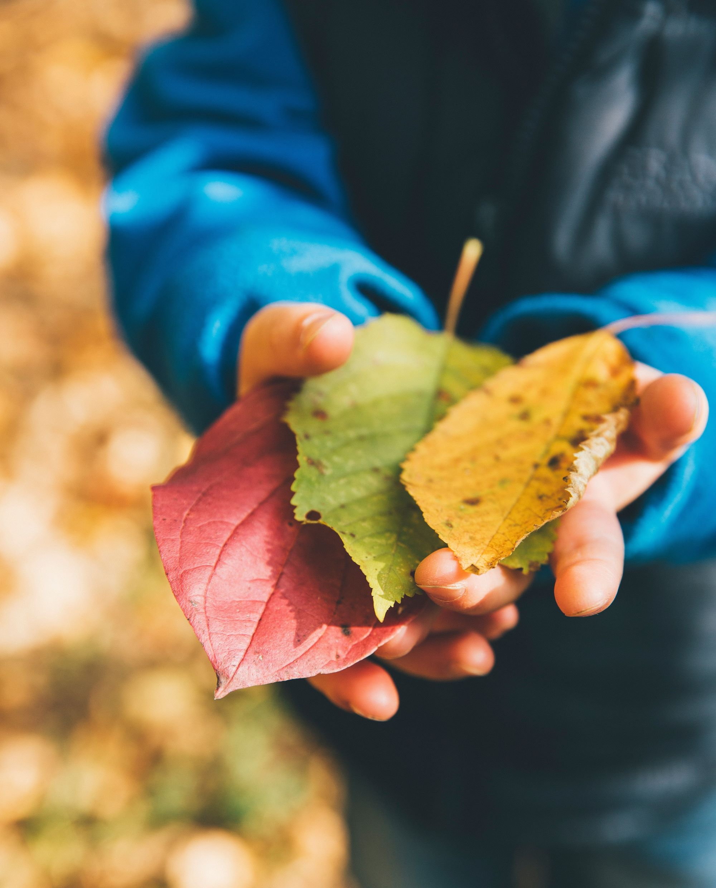
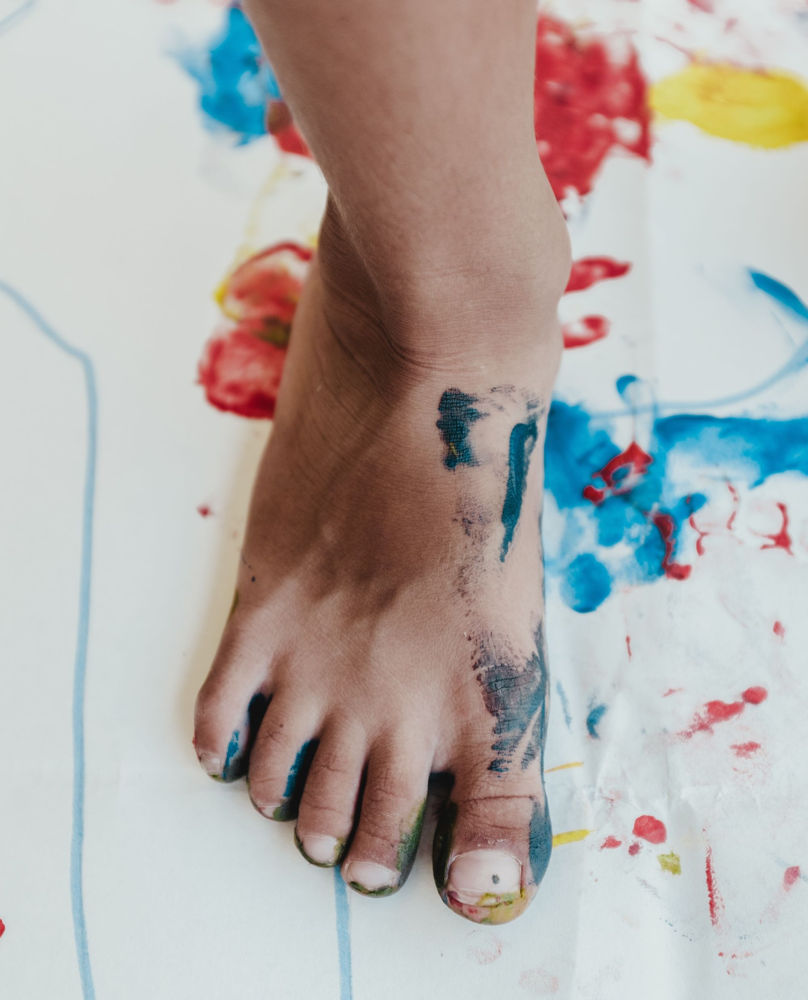
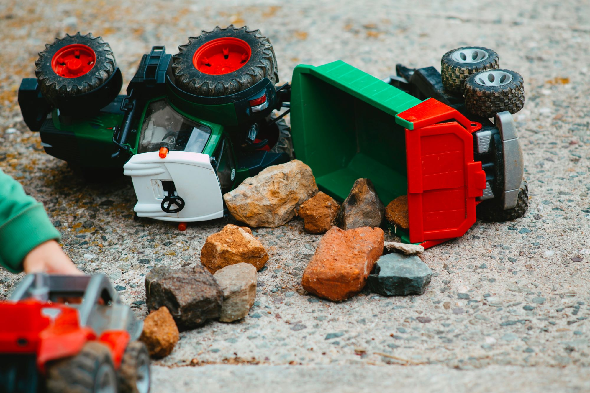

Curriculum Design
Section One
Element One: Connected
One of the elements of curriculum design that my program planning addresses is “connected”. In the planning, strong connections have been built up amongst different learning centres (Considerations for Program Planning in Early Childhood Education, 2019). Based on children’s interest in exploring nature, various activities related to the theme of nature are planned and set up in different learning centres for children to experience and explore nature, express their thoughts, and represent their learning in creative ways. Children are provided with different opportunities to apply their learning and skills acquired from one area to other areas (Considerations for Program Planning in Early Childhood Education, 2019).
For instance, in the Book & Story centre, children will read books of “What do you see in spring?” (Smith, 2014) and “Are You a Cheeseburger?” (Arnaldo, 2021) which talk about spring activities and new life and growth in the natural world. Their understandings and curiosity about the changes brought to our mother earth in this wonderful season and the growth of flowers from seeds will be carried on to the Sensory Exploration centre and Science & Nature centre where they experience soil, seeds and flowers by all senses and raise questions and investigate in science of nature, such as thinking about what is needed and how long does it take to grow flower. Also, they can represent their learning and feeling gained from activities of reading books of nature and exploration of natural materials to the Exploring Art centre through making flowers with tissue paper, painting and decorating garden mural and doing spring painting.
When engaging these activities which are meaningful and connected, children are given opportunities develop and practice various skills in different domains of development (Considerations for Program Planning in Early Childhood Education, 2019). For example, when reading books, children develop skills of conversing with peers and adults (CoD # 3.4) and enjoying literacy (CoD # 3.7) in communication, language and literacy domain through enjoying time with books, discussing contents with peers and adults, and making connections to their play and experience related to nature and spring activities (Ontario Ministry of Education, 2014a). When using different art materials and tools to make flowers and to do painting and make pattern for creating gardens and scenes of spring, they are practicing representation skill (CoD # 4.3) and skill of identifying patterns (CoD # 4.18) in cognition domain and fine motor skills of tool use (CoD # 5.3) in physical domain (Ontario Ministry of Education, 2014a). When exploring the relationship of soil, seeds and flowers related to condition and requirements of growing plants, they can also practise skill of Reasoning Logically (CoD # 4.9) in cognition domain through relating actions to outcomes, making logical connections, exploring changes and making hypothesis (Ontario Ministry of Education, 2014a).
Element Two: Meaningful
The second element of curriculum design that my program planning addresses is “meaningful”. In the planning, curriculum is planned and implemented based on children’s interest that is what children know and care about so that they learn best through engaging in direct experiences and explorations related to what they are keen on and curious about (Considerations for Program Planning in Early Childhood Education, 2019). As children are interested in cooking and enjoy pretending to cook and serve food in dramatic play when playing with friends, playdough and dough tools will be provided in the Sensory Exploration centre and a restaurant with provision of pizza set, sushi set, dim sum, cooking tools and equipment will be set up in Dramatic Play centre. In these play areas, children can enjoy making pizzas and toppings in different shapes while experiencing the texture of playdough and ways of making different forms of playdough through actions of rolling, squishing, moulding, breaking and flattening. They can also take up roles of cooks, waiters, and customers that they are interested and act out ideas through interacting with peers and manipulating the props.
Through engaging in these activities related to their interest of cooking and dramatic play, they can practice fine motor skills of tool use (CoD # 5.3) in physical domain (Ontario Ministry of Education, 2014a) through developing and strengthening muscles used for fine motor movements. They can also learn to develop skill of Reasoning Logically (CoD # 4.9) and representation skill (CoD # 4.3) in cognition domain (Ontario Ministry of Education, 2014a) through connection their actions of handling playdough to outcomes and use of props and language to develop socio-dramatic play of cooking and serving food like pizza to peers.
Moreover, as children are interested in using play foam and playdough to make pizza and sharing with peers, like pretending to cook and serve food, and enjoy mixing ingredients during activity of making playdough, a special event of making pancakes together with children is planned. They learn from process of “from the concrete to abstract” that is to make representation of their life and play experiences. Therefore, this activity is designed so that children can enjoy and in turn learn from the process of “from the abstract to concrete” (OPE Print Package, 2018-2019), that is turning what they imagine and pretend to do into reality through direct experience related to their interest.
From this food experience, they can learn social skill of cooperating (CoD # 1.6) and communication skills of conversing with peers and adults (CoD # 3.4) (Ontario Ministry of Education, 2014a) through learning how to interact and cooperate with each other to handle the ingredients. They can practice cognitive skills of problem-solving (CoD # 4.2) and reasoning logically (CoD # 4.9) (Ontario Ministry of Education, 2014a) as they can identify difficulties, think of ways to solve them, and explore causes and effect from their actions and related outcomes. When implementing this activity, children were actively engaged in the process of making pancakes by getting involved in each step of preparing and mixing ingredients and being excited to observe how pancakes were cooked over griddle. They could explore cause and effect when connecting the action of adding more flour into the batter to the outcome of getting harder to stir it and observing the condition of water evaporating over the heating surface of griddle. In short, when having direct and hand on experience through engaging these activities which are meaningful and related on their interest, they can learn and construct knowledge and develop skills effectively.
Section Two
Play-based learning
Play-based learning which “builds upon a child’s natural inclination to make sense of the world through play” (College of ECE, 2017, P.25) is emphasised and integrated in my program plan. Children are encouraged to learn through interacting with objects, people and information (OPE Print Package, 2018-2019). For example, in program plan, a number of interesting and open-ended materials including magnetic tiles, Legos, blocks, playdough, melty beads and clays, a set of food ingredients and a set of natural materials such as soil, seeds and flowers will be offered for children to explore, manipulate, and investigate.
As play is "freely chosen, intrinsically motivated, and non-literal" (OPE Print Package, 2018-2019, p.4), this wide range of materials offer children choices and freedom to choose to play with those that can arouse their interest and natural curiosity to explore with their bodies, minds, and senses in different ways. During play, it helps stimulate their imagination and creativity, and encourage them to generate questions, build hypothesis, test theories, and solve problems. All these play experiences help them construct knowledge and make meaning of the world around them. For example, when using magnetic tiles to build different things, children will explore how things work with lots of questions like “why these pieces stick together” and “how to make balance”, and find ways to solve problems. Through magnetic play, they will naturally develop problem-solving skills, explore cause and effects and learn math concepts like geometry, spatial reasoning and balance. Moreover, Children can participate in “a selection of activities organized to facilitate movement, activity, choice, autonomy, communication and social interaction” (OPE Print Package, 2018-2019, p. 4).
In program plan, a wide range of activities including “Marble maze”, “Floor of Lava”, “Duck, Duck, Goose”, “Hide and seek”, “What time is it, Mr. wolf”, “Transporting balls in spoon” will be implemented allowing children to choose to join in according to their interests and enjoy free play. When engaging in the games, children can practice skills of communicating, cooperating, reasoning logically and problem-solving through exchanging ideas, listening and responding to others appropriately, setting and following rules, identifying problems, seeking solutions and linking actions to outcomes. The children actively get engaged when playing the game with enthusiasm about setting and following rules and involving others to join in the game.
In addition, as it is essential for educators to “participate in play, guiding children’s planning, decision-making and communication, and extending children's explorations with narrative, novelty and challenges” (OPE Print Package, 2018-2019, p. 4), I will adopt various strategies to support their children’s play and facilitate their learning in play. For example, I will stay close to observe play, take part in play as partner, offer praise and encouragement, provide guidance and suggestions to stimulate their thinking, imagination and creativity, and make variations to meet individual needs and developmental skills, enrich play by adding materials and challenges which are slight beyond children’s ability. It is important to be flexible and supportive so that children can enjoy activities and learn through play.